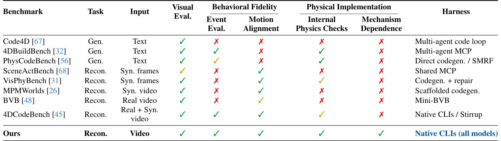
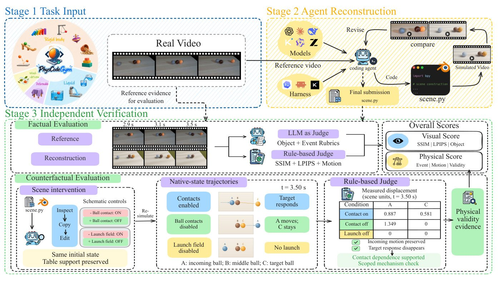
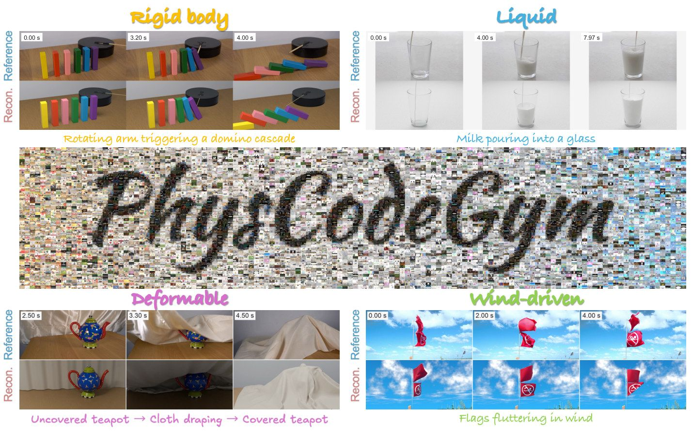
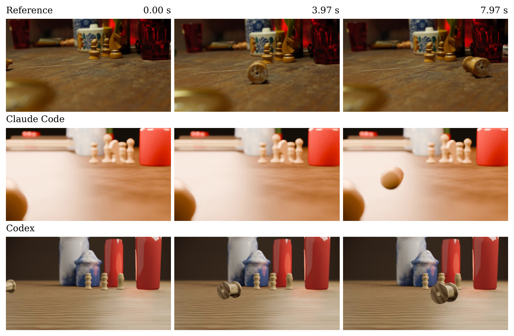
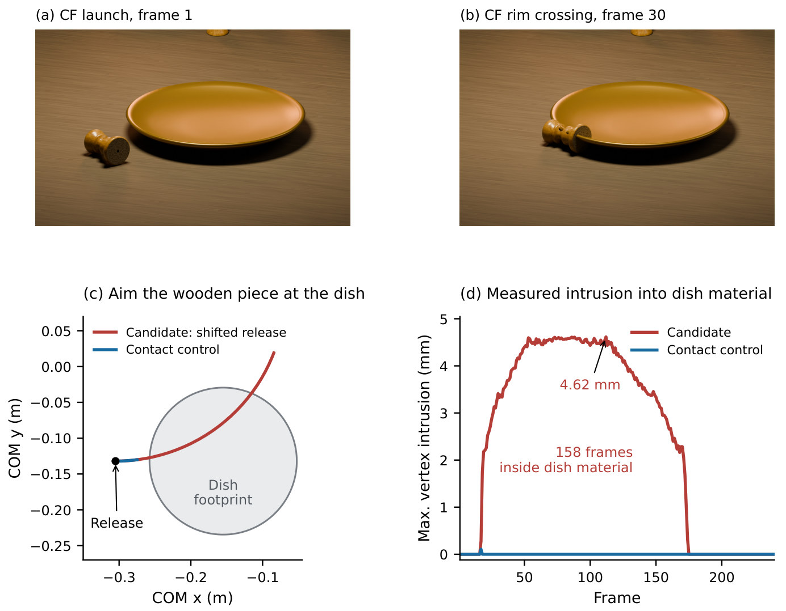
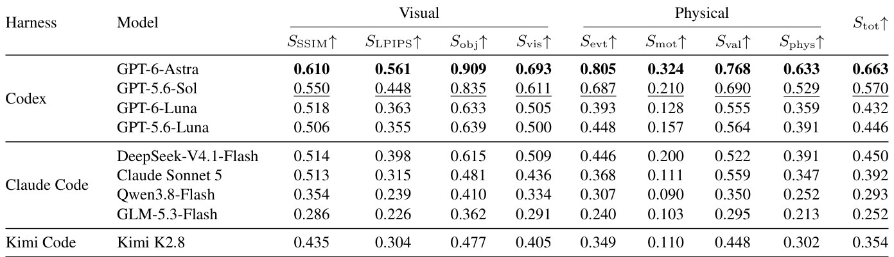
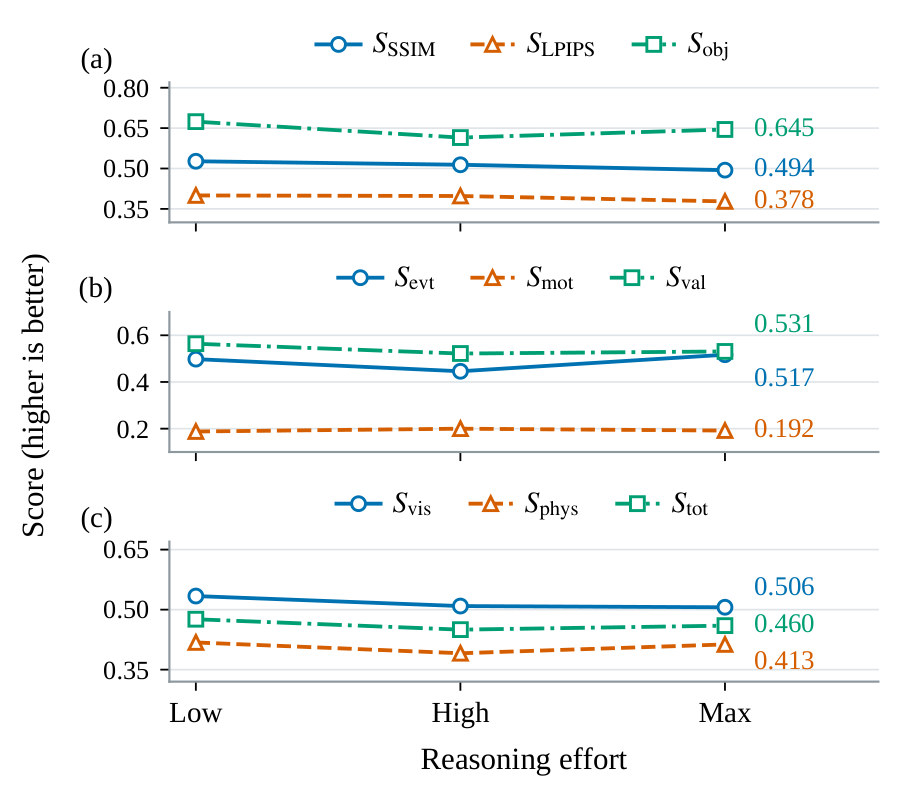
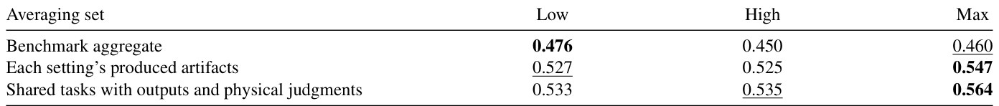
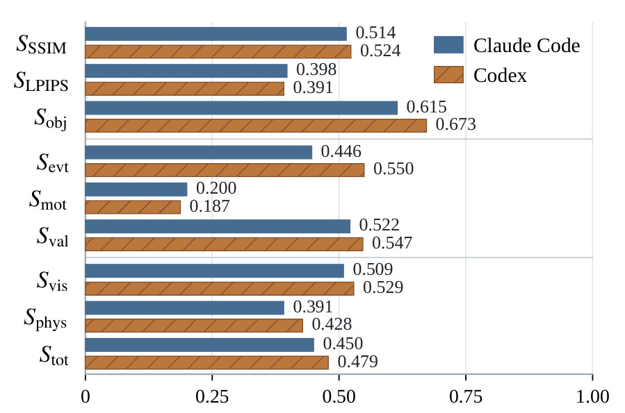
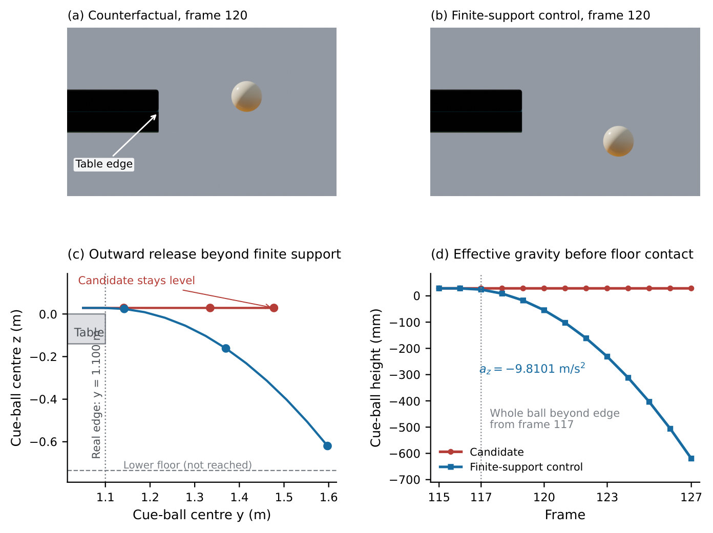

Agent-centric-real-to-sim · 归档于 2026-11-16
PhysCodeGym
PhysCodeGym: Benchmarking Coding Agents for Physically Verifiable 4D Reconstruction
没有项目页。摘要给的代码仓库 2026-11-18 可以打开，README 里有作者做的 physical-validity 回放视频（下面 E4 用了两段）；156 段参考视频放在 Hugging Face。
归档到 Agent-centric real-to-sim：评测 coding agent 能不能把真实视频重建成能运行的 Blender 物理场景，并进到场景里检查重建出的物理机制是否真的起作用。它也贴近 LLM-Harness（同一个模型在 Codex 和 Claude Code 里的验证行为对比）。
TL;DR
- Problem
- Coding agent 已经能从视频写出 4D 仿真程序，可以前的 benchmark 要么只比画面和运动，要么只沿原轨迹查物理：keyframe 做出来的运动、漏了接触的场景照样拿高分。
- Idea
- 156 个真实视频任务（刚体、液体、可变形、风驱）。Agent 在终端里看视频、写 Blender
scene.py、跑仿真、对比后再改。评测有六项指标；其中 physical validity 由一个 verifier agent 读程序、在原生场景里写 probe 测量，还会复制场景做 counterfactual 干预并配 control 场景。 - Result
- 九个配置里 GPT-6-Astra（Codex）最好，Stot 0.663，但 motion 最高只有 0.324（Tab. 2）。DeepSeek-V4.1-Flash 的 low effort 靠交卷多而领先（0.476），max 在交出的产物上更好（0.547，Tab. 7）。同一模型在 Codex 里得 0.479，在 Claude Code 里得 0.450（Fig. 5）。原条件检查满分的重建，换个释放点就穿进盘子 158 帧（Fig. 22）。
Problem
视频对上了，物理可能是假的：以前的 benchmark 量不出「运动是不是由建模的物理产生的」
Running example · 后面每个 stage 都跟着它走
Wooden-piece rolling（论文的 Fig. 6d、Fig. 22、Fig. 25–27 都是这个任务）：一段 8 s 参考视频（240 帧 · 30 FPS · 3840×2160）。一个线轴状的木件（wooden piece）从画面左侧滚进来，横穿木桌；前景有一个盘子（dish），背景有 knight、pawn 等棋子和杯子。Agent 拿不到源程序，也拿不到物理参数。
→ 想要：一个从空 Blender 场景开始的 scene.py，渲染出同一段运动（240 帧 · 640×360）。木件必须靠 rigid-body solver 滚动，不能靠 keyframe；要是把它推向盘子或 knight，它应该被挡住。
flowchart LR IN["本例输入
木件滚过木桌 · 8 s"]:::example IN --> A1["文本输入的生成类
Code4D · 4DBuildBench …"] A1 --> AX["只对照文字要求
不和参考视频比运动
motion 最高才 0.324"]:::gap IN --> B1["视频重建、按保真打分
BVB · 4DCodeBench …"] B1 --> BX["keyframe 也能过
场景里的错看不见
S_obj = S_evt = 1 仍违规"]:::gap IN --> C1["查场景内部物理
4DBuildBench · PhysCodeBench"] C1 --> CX["只沿原轨迹查
原路线碰不到盘子
原条件 1.0 → 穿盘 4.62 mm"]:::gap
三条「坏在哪」都是按 §1、§2、§3.2 和 Tab. 1 推断的：论文没有在木件任务上运行这些旧 benchmark。每条线按它缺的那一列归类，所以同一个 benchmark 可能出现在两条线上。文本类 = Code4D、4DBuildBench、PhysCodeBench（三者都没有 Motion Alignment）；视频重建类 = BVB（禁止物理仿真）、SceneActBench（恢复 keyframe 轨迹）、MPMWorlds、4DCodeBench（允许 keyframe 和预设运动，主要按保真度打分）；查内部物理 = 4DBuildBench、PhysCodeBench，加上范围有限的 VisPhyBench、4DCodeBench，它们都没有 Mechanism Dependence。数字出处：0.324 是本文九个配置里最高的 motion 分（Tab. 2），说明文本类不测的恰是最难的一项；第二条的例证来自其他任务（App. D.2 列了六个 Sobj = Sevt = 1 却违反物理的重建，比如 Newton cradle 松手后势能 9.441 mJ，高于初始总能量 4.971 mJ）；第三条就是本例 GPT-6-Astra 的重建（App. D.3.1，Fig. 22）。

怎么读这张表
- Task / Input：前三行（Code4D、4DBuildBench、PhysCodeBench）是 Gen.，输入是 Text；其余是 Recon.，输入从合成帧、合成视频到真实视频。本例这种真实视频，只有 BVB、4DCodeBench 和本文在用。
- Behavioral Fidelity：Event Eval. 查目标动作或结果有没有发生，Motion Alignment 拿运动和参考比；三个文本类都没有 Motion Alignment。
- Physical Implementation：Internal Physics Checks 查场景结构、物理参数或仿真状态；Mechanism Dependence 用配对的物理干预去测「看到的运动是不是靠建模的机制产生」。
- Harness：各 benchmark 报告的执行方式。本文让所有模型跑原生 CLI（Codex、Claude Code、Kimi Code）。
根本问题：只看「结果像不像」或「原轨迹上对不对」，没人检查运动是不是真的依赖建模出来的接触、支撑和力。 这篇的切入点：提交物是程序，核心运动必须来自 solver；评测进到原生场景里测量，再复制场景做 counterfactual 干预（关接触、移释放点、去支撑），配 control 场景来判断机制依赖。
Related work
| 相关工作 | 解决什么 | 怎么解决 | 和本文的区别 |
|---|---|---|---|
| 同一问题 · 别的 benchmark | |||
| 4DCodeBench（最接近） [45] | 评 agent 把真实和合成视频重建成可执行的动态场景 | 比外观、几何、运动，加 state/event 问答和 mesh 完整性诊断；合成子集有 3D 真值 | 允许 keyframe、预设运动和物理仿真任选，主要按保真度打分 → 本文要求核心运动出自 solver，并用干预测机制依赖 |
| 其他视频→程序 benchmark（本文所属的一类） BVB、SceneActBench、VisPhyWorld（Tab. 1 记作 VisPhyBench）、MPMWorlds | 评 agent 从视频或帧恢复场景结构和动态 | BVB 把真实视频重建成 Blender 动画、禁止物理仿真；SceneActBench 用给定资产恢复 keyframe 轨迹；后两个从合成观测恢复可执行仿真 | 没有事件评估，多用合成输入，场景内物理基本不查 → 本文用真实视频，加事件 rubric 和场景内测量 |
| 文本→动态场景 benchmark Code4D（Code2Worlds）、4DBuildBench（SimWorlds）、PhysCodeBench | 评 agent 按文字生成动态 3D 场景及其物理实现 | 4DBuildBench 分开评视觉和内部物理（solver 配置、约束、动画替身）；PhysCodeBench 读引擎状态做物理断言和守恒诊断 | 只对照文字要求，没有参考观测可比 → 本文还要和参考视频的事件、运动对齐 |
| 相似做法 · 别的问题 | |||
| Code as Worlds [49] | 从文字或真实视频发现可执行的世界 | 构造、验证、精炼世界；支持改条件后重跑，再拿这些世界做物理推理的监督 | 目标是发现世界、产出推理监督 → 本文把「改条件重跑」变成独立评测：干预配 control，判断机制依赖 |
| 视频物理重建方法 Vid2Sim、PAC-NeRF、PhysTwin、Spring-Mass 3DGS、∆YNAMICS、OVOW | 从视频恢复几何、物性和动态，用来预测和重仿真 | 几何/外观表示接可微连续体、降阶或弹簧质点仿真；∆YNAMICS 让语言模型写场景配置，在 MuJoCo 里重仿真 | 是方法，表示和仿真器事先定好 → 本文把同一目标交给 coding agent 写开放的 Blender 程序，并给出评测 |
来源：论文 §1、§2 Related Work 和 Tab. 1，未另行检索。PhysTwin 在 library 里有页面，本文只在 §2 引用，没有数字对比。§2 还提到用代码加视觉反馈做静态或动态 3D 的 Thinking in Blender、VIGA，以及 BlenderGym 等图形编辑 benchmark，这里略去。
Level 1 · Big picture
给 coding agent 一段真实视频，让它写出能重跑的 Blender 物理程序；评测既比画面，也进场景测量、做干预

怎么读这张图
- Stage 1 Task Input（左上蓝框）：圆盘是四大类（Rigid body、Liquid、Deformable、Wind-driven）；中间是 Real Video。下方虚线 "Reference evidence for evaluation" 表示参考视频既是任务输入，也是评测证据。本例：木件视频。
- Stage 2 Agent Reconstruction（右上黄框）：Models（各家模型图标）加 Harness（三个 CLI 图标）组成 coding agent。Agent 写 Code →
scene.py→ Simulated Video，再和 Reference video 做 compare，Revise 箭头回到 agent；虚线向下是 Final submissionscene.py。本例：DeepSeek-V4.1-Flash 在 Codex 里改了接触几何，第 20 次启动 Blender 才出最终片（Stage 2）。 - Stage 3 上半 Factual Evaluation：Reference 和 Reconstruction 取同一时刻的帧（2.9 s、3.1 s、3.5 s），分给 LLM as Judge（Object + Event Rubrics）和 Rule-based Judge（SSIM + LPIPS + Motion），汇到右上 Overall Scores：Visual Score（SSIM | LPIPS | Object）、Physical Score（Event | Motion | Validity）。本例：Object 0.286，Event 0 或 1（Stage 3）。
- Counterfactual Evaluation · Scene intervention：Agent 读
scene.py，Inspect → Copy → Edit。Schematic controls 里红色「- … ON」改成绿色「+ … OFF」，就是一次改动：关掉球之间的接触（Ball contact），或关掉发射用的力场（Launch field）。黄底 "Same initial state, Table support preserved"：其他条件都不动。 - Native-state trajectories（t = 3.50 s）：A 是来球，B 是中间球，C 是目标球。Contacts enabled → 目标响应；Ball contacts disabled → A 照样来、C 不动；Launch field disabled → 根本没有发射。
- Rule-based Judge 表：t = 3.50 s 时 A、C 的位移（scene units）。Contact on：0.887、0.581；Contact off：1.349、0；Launch off：0、0。两个 ✓（来球运动保留、目标响应消失）→ "Contact dependence supported"，只针对这一个机制 → 变成 Physical validity evidence，汇入 Physical Score。本例对应的干预是把释放点对准盘子（Stage 5）。
flowchart LR I["参考视频
木件滚过木桌 · 8 s"]:::example --> A["Coding agent
写 → 跑 → 改 scene.py"] A --> V["Visual score
SSIM · LPIPS · Object
Object 0.286"] A --> P["Physical score
Event · Motion · Validity
Event 0→1 · CF 穿盘"]:::win
Stot = (Svis + Sphys)/2。本例的数字分属不同重建：Object 0.286 和 Event 0→1 是 DeepSeek-V4.1-Flash 在 Claude Code 和 Codex 里的两次重建，「CF 穿盘」是 GPT-6-Astra 的重建。
Level 2 · Stages
5 个 stage：建任务 → agent 重建 → 视频五项 → 场景内检查 → counterfactual 干预
flowchart TD S1["1 · 建任务
8 s 片段 + 3 份标注"] --> S2["2 · Agent 重建
第 20 次启动才出片"] S2 --> S3["3 · 视频五项指标
Object 0.286 · Event 1"] S2 --> S4["4 · 场景内物理检查
原条件判据 1.0"] S4 --> S5["5 · Counterfactual 干预
穿盘 158 帧"]:::win S3 --> T["汇总 S_tot
(S_vis + S_phys)/2"] S5 --> T click S1 href "#stage-1" click S2 href "#stage-2" click S3 href "#stage-3" click S4 href "#stage-4" click S5 href "#stage-5"
点击 stage 展开 Level 3 细节。Stage 4 和 5 合起来给出第六项指标 physical validity（Sval），counterfactual 判据是它的一部分。
Level 3 · Details
每个 stage 的细节
Stage 1 建任务（§3.1、App. A.1） 公开视频 → 156 个任务，每个是标准化片段 + 物体清单 + 事件标注 + 物理 rubric
- Why：任务的物理原因要看得出来、要能在 Blender 里表达，评分要有据可查。
- 四条原则：P1 运动由画面里可见的物理过程引起；P2 Blender 能表达，排除燃烧、切割、撕裂和断裂、虹吸和吸收、液体混合、磁力；P3 每个任务只属一个主类，刚体和液体再按主导机制分子类；P4 标注只写视频里看得到的，带时间戳（物体短暂出画时的路径不要求）。
- 收集：Pexels、Physics-IQ、BAAI-DataCube Physics-aware Videos、IRIS → 自动检查 + 视觉 agent 审 + 人工挑（相机稳、背景简单、事件不被挡、现象多样）。
- 标准化：从至少 8 s 的视频里截一段运动最明显的连续 8 s，统一成 3840×2160、30 FPS、240 帧，保持原播放速度；去重并人工终审后留 156 段，一段一个任务。
- 三份标注：① 物体清单：类别、数量、外观、初始布局，模型辅助起草 → Sobj；② 事件标注：参与物体、关键动作、先后顺序、终态是否达成并保持，带时间戳，共 578 条 → Sevt；③ 物理 rubric：允许的初始条件、驱动方式和等价表示，加检查机制的判据，部分任务含 counterfactual 判据 → Sval。前两份都用参考视频和无关视频做对照检查。
- 构成（Tab. 3、4）：刚体 95（下落反弹 16、滚动与轨道 18、碰撞与连锁 14、摆动与悬挂 16、旋转 20、颗粒与堆积 7、堆叠静平衡 4）；液体 40（倾倒装填 25、射流与表面流 8、液体–物体 7）；可变形 12；风驱 9。来源：Pexels 122、Physics-IQ 27、BAAI 5、IRIS 2。
flowchart TD a["收集
Pexels 122 · Physics-IQ 27 …"] --> b["筛选 + 截 8 s
240 帧 · 30 FPS"] b --> o["物体清单
→ S_obj"] b --> e["事件标注
578 条 → S_evt"] b --> r["物理 rubric
含 CF 判据 → S_val"]

怎么读这张图
- 每格的两排：上排 Reference（参考视频），下排 Recon.（重建），左上角是时间戳。
- Rigid body：转臂推倒一排多米诺（0.00 / 3.20 / 4.00 s）；本例的木件也属刚体。
- Liquid：牛奶倒进玻璃杯，液面上升（0.00 / 4.00 / 7.97 s）。
- Deformable：布落下盖住茶壶（2.50 / 3.30 / 4.50 s）。
- Wind-driven：旗子在风里飘（0.00 / 2.00 / 4.00 s）。
- 中间：PhysCodeGym 字样由许多小缩略图拼成，图注没有解释。
Running example 在这一步
木件滚动是刚体任务；按 Fig. 6 的排法属于 Rolling and tracks（18 个任务、68 条事件）。论文没写这段视频来自哪个来源。
它的 rubric 有两类判据：原条件判据检查滚动体的刚性、连续性和桌面支撑（App. D.3.4）；counterfactual 判据把释放点移向旁边的障碍物（盘子、knight、木 token），看障碍物有没有接触响应（App. D.3）。
Stage 2
Agent 重建：交一个程序（§3.2、§4.1、§4.2、App. A.3）
参考视频（终端容器里）→ scene.py + 原生 Blender 场景 + 240 帧渲染
- Why：要的不是另一段相似的视频，而是一个能重跑、能检查、能改条件再跑的物理过程模型，所以提交物是程序。
- 观测工具：视频元数据、指定帧、帧网格、按给定频率采样的片段。参考场景的源程序和物理参数都不给。
- 构建工具：运行场景程序、检查保存下来的场景结构、渲染仿真状态的单帧预览。提交前还有一个检查工具，报格式和策略问题，让 agent 在结束前改掉。
- 提交物
scene.py：自包含，从空 Blender 场景用代码建出几何、材质、相机、灯光，设好物理属性、初始条件、约束和力；渲染前 bake 仿真缓存；输出原生场景文件和 240 帧 640×360、30 FPS 的渲染（8 s）。不许解码媒体、联网、开子进程、动态 import。 - 什么算有效重建：(i) 复现外观、布局和可见事件；(ii) 运动由建模的物理产生：核心物体的运动必须来自 solver、力、约束和初始条件。Keyframe、脚本位姿、隐藏支撑、视频里没有的力场（例如把球引向观测路径的 attractor）都不算。显式建模的外部驱动可以，但被驱动的物体必须靠物理交互响应。不要求还原真实参数（质量常常看不出来）。
- 预算：每个任务最多 3 h、20 次 Blender 启动（运行、检查、预览共用这个配额）；观测命令不占启动次数，但占时间和上下文。默认 high reasoning effort。
- 运行环境：Harbor v0.22.0 的 Docker 后端（Ubuntu 24.04、Blender 4.0.2）里跑原生 CLI：Codex 跑 GPT-6-Astra、GPT-5.6-Sol、GPT-6-Luna、GPT-5.6-Luna；Claude Code 跑 DeepSeek-V4.1-Flash、Claude Sonnet 5、Qwen3.8-Flash、GLM-5.3-Flash；Kimi Code 跑 Kimi K2.8 Preview。
- 怎么计分：每个模型每个任务排一次。服务端故障另记 recovery run；agent 自己的错（超出上下文、发了坏图）算失败。同一任务跑过多次时，取最后一次产出渲染序列的 run，不取最高分；一次都没产出就记 0。
flowchart TD o["看视频
帧 · 帧网格 · 片段"] --> w["写 / 改 scene.py
接触几何、斜面"] w --> r["跑 Blender
每次占 20 次中的 1 次"] r --> p["预览、查场景
不对就回去改
发现木件卡住"] p --> w p --> s["检查工具 → 提交
第 20 次启动出片"]:::win

怎么读这张图
- 行和列：三行是 Reference、Claude Code、Codex，三列是 0.00 s、3.97 s、7.97 s。两行重建都是 DeepSeek-V4.1-Flash，high effort。
- Reference：木件从左缘滚进来，3.97 s 到桌子中间，7.97 s 到右侧。
- Claude Code 行：没有复现滚动事件（event 0）。它用完 Blender 配额后才改写最终程序，最终版一次也没跑过。
- Codex 行：木件同样从左滚到右（event 1）。但背景、杯子、棋子都不像，两行的 Sobj 都只有 0.286。
- 这些帧从哪来：是 benchmark verifier 用提交的程序重新跑出来的，不是 agent 自己的渲染。
Running example 在这一步
Codex（App. D.4.1，trace 步号）：起初也做出一个卡住不动的木件 → 发现卡住，测试 collision shape 和桌面分辨率，改接触几何和斜面（132–160）→ 第 20 次启动渲染最终程序 → 检查输出帧和诊断，finalize（163–169）。
Claude Code：做过原型测量，但在跑最终改写版之前用完了 Blender 配额；最后的检查找不到保存的场景和完整的帧序列，finalizer 拒收（199–205）。Tab. 10：配额用完后改了最终程序，静态检查通过，执行被拦，输出检查失败（166–205）。
两边的任务正文逐字相同，都要求验证再 finalize；只是 Codex 的任务 prompt 开头多一句「把最后一次 Blender 启动留给最终验证」（App. D.4.3）。
Stage 3 视频五项指标（§4.3） 重新渲染的 240 帧 + 参考视频 → SSSIM、SLPIPS、Sobj、Sevt、Smot
- Why：画面像不像、物体对不对、事件发生没有、哪里动了多久，是四种不同的失败，揉成一个数就分不清了。
- 结构相似度（SSSIM）：逐帧 SSIM。
- 感知相似度（SLPIPS）：clip(1 − d, 0, 1)，d 是逐帧 LPIPS（AlexNet）距离，所以越高越好。
- 物体准确率（Sobj）：一个 VLM 按物体清单逐项判断，取总通过率；对光照和纹理的细小差别不敏感。
- 事件得分（Sevt）：VLM 逐条判断事件有没有在候选视频里发生，并引用候选视频里的时间段作证据。它能看到参考视频里每个角色的静帧（只用来认物体）、候选视频和补充的时间帧，但看不到参考视频的动作描述。每个候选独立判 3 次，逐条取多数；得分是通过条目的加权比例；定义任务的关键事件失败，就封顶为 0（例：球没绕着托盘滚，托盘摆得再对也是 0）。
- 运动得分（Smot）：借用 Physics-IQ 的运动掩膜：灰度帧做高斯模糊，减去滑动平均背景，再阈值化和形态学处理。Spatial IoU 比「哪里动过」；Weighted IoU 再比「动了多久」（每个像素在参考和候选里运动帧的占比，取 Σ 较小值 / Σ 较大值）。两者平均。不用认物体，能补上事件标注没写的细节，比如摆幅衰减、液流范围。
- 汇总：Svis = (SSSIM + SLPIPS + Sobj)/3；Sphys = (Sevt + Smot + Sval)/3；Stot = (Svis + Sphys)/2。没交出有效产物的任务，每项都记 0 并计入分母。
- 为什么 event 和 motion 都要：两个摆的任务里，GPT-5.6-Luna 的 motion IoU 最高（0.318）但 event 0；GPT-6-Astra motion 0.242、event 1（Fig. 11，App. D.1.1）。
flowchart TD v["候选视频
240 帧 · 640×360"] --> px["逐帧比
SSIM · LPIPS"] v --> j["VLM judge ×3
Object 0.286 · Event 1"] v --> m["运动掩膜 IoU
空间 + 时长"] px --> vis["S_vis
SSIM、LPIPS、Object 平均"] j --> vis j --> ph["S_phys
Event、Motion、Validity 平均"] m --> ph
Running example 在这一步
DeepSeek-V4.1-Flash 的两次木件重建：Sobj 都是 0.286（物体和外观都不太像）；Sevt 在 Claude Code 里是 0，在 Codex 里是 1（滚动事件找回来了）。论文没报这两次重建的 SSIM、LPIPS 和 motion。
Stage 4
场景内物理检查：原条件（§4.3、App. B.1）
scene.py + 原生场景 + 任务 rubric → 每条判据的判定和测量证据 → Sval
- Why：视频上的检查看不到场景里的穿模、凭空多出的能量、比物体大一圈的碰撞体（E4 有六个例子）。
- 谁来查：一个当 verifier 的 agent，按人工标注的 rubric 查。判据覆盖数值稳定、重力、质量、驱动，以及任务特定的接触、支撑、结构完整；同一任务的所有候选用同一份 rubric。
- 怎么查：读提交的程序和原生场景 → 把 rubric 里的语义角色对到场景物体上 → 追踪它们的运动是怎么实现的 → 定测量计划，按这份实现写 probe → 在 Blender 里测几何、物体状态、接触和支撑关系、随时间的运动，用 Python 分析 → 证据不够就再测。
- 报告：每条判据一个判定，附源码位置和实测证据；评测 harness 按 rubric 的聚合规则算分。漏掉参考事件归 event 管，本身不算物理违规。
- 分数口径：validity 结果仍是 provisional，取 rubric 分数区间的下界；已有产物但测不了的技术缺口不计入，登记过的缺产物 0 分保留。Sphys 先按任务算再平均，只用有 validity 的任务。
flowchart TD a["读程序 + 原生场景
scene.py、场景文件"] --> b["rubric 角色 → 场景物体
滚动体、桌面"] b --> c["写 probe，在 Blender 里测
刚性、连续、支撑"] c --> d["逐条判定 + 证据
原条件判据 1.0"]
Running example 在这一步
木件任务的原条件判据检查滚动体的刚性、连续性和桌面支撑。GPT-6-Astra、GPT-5.6-Sol、GPT-5.6-Luna 的三个重建在这些判据上都拿 1.0（App. D.3）。可它们各自场景里都有一个原路线碰不到的障碍物没有碰撞，这一步看不出来，要靠 Stage 5。
Stage 5 Counterfactual 干预（App. B.2、D.3） 原生场景 + rubric 的 CF 判据 → 干预后的测量，和 control 对照 → CF 判定（计入 Sval）
- Why：有些交互原轨迹从来不触发（木件的原路线不经过盘子），缺了这个接触，原条件下永远查不出来。
- rubric 先写好：要测哪种物理依赖、干预后预期什么响应。
- 做法：在程序里找到对应机制 → 复制出一个独立的场景副本 → 实施规定的干预（改一个力、去掉一个接触、改一个初始条件，其余相关条件不变）→ 重仿真，和没改的 baseline 比。
- 解读之前：先确认干预真的生效，再用 control 场景检验测量本身。
- 判失败的门槛：要有实测的材料侵入或无支撑运动，外加一个会正常响应的 control；只看到轨迹变了不算。
- 计分：CF 检查是 validity rubric 里的判据。论文只说「selected tasks」，没给数量；代码仓库 README 写 43 个任务带 CF，评分文档写这些任务的原条件判据合计权重 50、CF 权重 50。
flowchart TD a["复制场景
同一初始状态"] --> b["干预
释放点移向盘子"] b --> c["候选重仿真
158 帧在盘里 · 4.619 mm"]:::gap b --> d["Contact control
被挡住 · 0.110 mm"] c --> e["CF 判据失败
盘子没有接触"] d --> e

怎么读这张图
- (a) CF launch, frame 1：干预后的起点：木件被放到盘子左边、朝盘子滚，离盘面 32.25 mm。
- (b) CF rim crossing, frame 30：木件压进盘沿，没有被挡住。
- (c) Aim the wooden piece at the dish：俯视的质心（COM）轨迹，单位 m。黑点 Release 是释放点；灰圆 Dish footprint 只是盘子的投影；红线 Candidate 穿过整个盘子，蓝线 Contact control 到盘边就停了。
- (d) Measured intrusion into dish material：纵轴是木件顶点侵入盘子三维材料的最大深度（mm），横轴是帧号。红线最深 4.62 mm（正文 4.619 mm），共 158 帧在盘子材料里；蓝线几乎贴着 0（正文：最多 0.110 mm）。
- 正文补充：把盘子删掉，候选的质心轨迹完全不变，说明盘子在物理上不存在。Control 用同一个 mesh、质量、惯量和积分步长，只让盘子有接触。所以问题是障碍物没有响应，不是图像或俯视投影上的重叠。
Running example 在这一步
同一个木件任务，三个模型各漏掉一个原路线碰不到的障碍物，原条件判据都是 1.0：
GPT-6-Astra · 盘子：158 帧在盘子材料里，最深 4.619 mm（Fig. 22）。GPT-5.6-Sol · knight：knight 的五个材料 mesh 都没有碰撞体；两个释放点分别有 46、29 帧在 knight 里，最深 0.295、0.105 scene units；左侧释放时删掉 knight，122 个采样的位置和速度完全不变（Fig. 25）。GPT-5.6-Luna · 木 token：实心圆柱、没有接触体；两个释放点各连续 32 帧相交，最小符号距离约 −0.110 scene units（Fig. 26）。
Recap：例子覆盖了论文的哪些 idea
| 论文里的 idea | 例子里在哪体现 |
|---|---|
| 156 个任务、四大类、P1–P4 原则 | Stage 1：木件滚动是刚体任务（按 Fig. 6 属 Rolling and tracks） |
| 三份标注对应三项指标 | Stage 1：物体清单 → Sobj，事件 → Sevt，rubric → Sval |
| 提交物是程序，核心运动必须来自 solver | Stage 2：scene.py 从空场景建起，bake 后渲染；不许 keyframe |
| 观测、构建、检查工具；3 h + 20 次启动 | Stage 2：Codex 第 20 次启动才出最终片；Claude Code 配额用完，最终版没跑过 |
| Harness 不同，验证行为不同 | Stage 2、E3：同一个 DeepSeek-V4.1-Flash，Codex event 1，Claude Code event 0 |
| 像素和感知相似度 | Stage 3：本例没报；整体见 Tab. 2 |
| VLM 按物体清单判分 | Stage 3：两个 harness 都是 0.286 |
| VLM 判事件（三票多数，关键事件失败封顶为 0） | Stage 3：滚动事件 0 → 1 |
| 运动掩膜 IoU | Stage 3：本例没报；Fig. 11 说明 motion 高不等于事件发生 |
| Verifier agent 进场景测量（原条件） | Stage 4：刚性、连续、桌面支撑，三个重建都是 1.0 |
| Counterfactual 干预 + control | Stage 5：移释放点 → 穿盘 158 帧、4.619 mm；control 只有 0.110 mm |
| 汇总，缺产物记 0 | Stage 3 的公式；E1、E2 |
| Reasoning effort：完成率和质量的取舍 | 例子没涉及（论文只有整体统计），见 E2 |
Results
最强的 GPT-6-Astra 总分 0.663，motion 最高 0.324；画面和事件满分的场景照样有物理错
顺序同 §5：E1 九个配置的总表 → E2 reasoning effort：完成率和质量的取舍 → E3 同一模型换 harness，验证行为和分数 → E4 物体和事件满分时的物理错误 → E5 counterfactual 多抓到的错。比的都是分数（重建质量）；E1 还比成本，E2 还比完成率。
表和图里的符号
| 符号 | 白话 | 在木件例子里 |
|---|---|---|
| SSSIM | 逐帧结构相似度 | 没报 |
| SLPIPS | 感知相似度：1 减 LPIPS 距离，截到 0–1 | 没报 |
| Sobj | VLM 按物体清单判的通过率 | 0.286（DeepSeek-V4.1-Flash，两个 harness） |
| Svis | visual score：上面三项的平均 | 没报 |
| Sevt | VLM 三票多数判事件，关键事件失败记 0 | Claude Code 0，Codex 1 |
| Smot | 运动掩膜的空间 IoU 和时长加权 IoU 的平均 | 没报 |
| Sval | physical validity：verifier agent 在场景里测出来的，含 CF 判据 | GPT-6-Astra：原条件判据 1.0，CF 判据失败 |
| Sphys | physical score：event、motion、validity 的平均 | 没报 |
| Stot | 总分：(Svis + Sphys)/2 | 没报 |
E1九个 agent 配置，谁重建得最好？§5.1 · Tab. 2 · Fig. 3

- 说明什么
- GPT-6-Astra（Codex）三项汇总都第一：Stot 0.663、Svis 0.693、Sphys 0.633；GPT-5.6-Sol 第二（0.570）；Claude Code 组最好的是 DeepSeek-V4.1-Flash（0.450），全表最低是 GLM-5.3-Flash（0.252）。九个配置都是物体分高于事件分（Sol 0.835 vs 0.687），motion 最高只有 0.324。排名还随维度变：GPT-6-Luna 的 visual 略高于 GPT-5.6-Luna（0.505 vs 0.500），event 和 motion 却更低（0.393 vs 0.448，0.128 vs 0.157）。成本（Fig. 3，正文数字）：Sol 每任务约 $3.40 得 0.570，Astra $11.57（3.4 倍）得 0.663，两者在估算成本的 Pareto 前沿上；DeepSeek-V4.1-Flash 每任务累计 16.98M token，约是 Sol（5.70M）的 3 倍，却只得 0.450，估算成本 $0.72。
- 在故事里
- Agent 认得出物体，难在重建运动和物理交互：这正是这个 benchmark 要量、旧 benchmark 量不到的部分。
- 指标
- 六项加三个汇总，越高越好（符号见上表）。缺产物的任务每项记 0 并计入分母；Sval 取 rubric 区间下界；Sphys 只在有 validity 的任务上平均，所以 Stot 列等于表里 Svis 和 Sphys 两列的平均。
- 怎么评测
- 156 个任务；high effort、3 h、20 次 Blender 启动；每个模型每任务排一次，取最后一次有渲染序列的 run。
- 每个模型只在一种 harness 里跑（OpenAI 模型都在 Codex），模型和 harness 的影响分不开。
- 换口径时前两名不变：对齐任务子集（Tab. 5）Astra 0.664、Sol 0.570；只算有产物的任务（Tab. 6）Astra 0.663、Sol 0.574。但只算有产物时 GLM-5.3-Flash 是 0.488、Qwen3.8-Flash 是 0.470，远高于 Tab. 2 的 0.252、0.293。我的读法：低分配置很大一部分输在没交出产物。
E2Reasoning effort 越高越好吗？§5.2 · Fig. 4 · Tab. 7 · App. C.3


- 说明什么
- 完成率和质量此消彼长。缺产物记 0 时 low 最高（0.476；max 0.460，high 0.450）；只算交出的产物，max 最高（0.547；low 0.527，high 0.525），max 的 event 和 physical 也最高（0.615、0.492）；共同任务上 max 0.564（low 0.533，high 0.535），event 0.628 vs low 0.551。low 比 max 多出的 +0.016 = 缺产物不对称贡献 +0.036 + 双方都有产物的任务贡献 −0.020；只用原条件 validity 时，这个差距只缩小约 0.003，CF 是次要因素。代价：max 的输出 token 是 low 的 2.46 倍，平均执行时间从 93.3 涨到 110.7 分钟；多出来的缺产物集中在超时、最终提交跑不通或缺文件。
- 在故事里
- 固定预算下想得多不一定赢：benchmark 总分同时考质量和交卷，两者要分开看。
- 指标
- Stot 在三种平均集合下的值（Tab. 7），Fig. 4 用第一种。max 减 low 的逐任务配对差平均 0.030，task bootstrap 95% 区间 [−0.001, 0.061] 含 0，作者说不能当作普遍的 effort 优势。
- 怎么评测
- 只测 DeepSeek-V4.1-Flash，在 Claude Code 里跑 low、high、max；high 档的总分和 Tab. 2 里 DeepSeek 那一行相同（0.450）。
- 三档同样 3 h + 20 次 Blender 启动。
- Bootstrap 只反映任务抽样；没有重复跑，run 间方差没有估计。
E3同一个模型换 harness：验证行为和分数有关吗？§5.2 · Fig. 5 · App. D.4

- 说明什么
- Codex 总分更高（0.479 vs 0.450），差得最多的是 event（0.550 vs 0.446）。Sobj（0.673 vs 0.615）和 Sval（0.547 vs 0.522）也更高，SLPIPS（0.391 vs 0.398）和 Smot（0.187 vs 0.200）略低。两条 trace：木件 event 0 → 1，Sobj 都是 0.286（见 Stage 2）；倒红酒 event 0 → 0.857，Svis 0.521 → 0.601，但 Codex 仍没做出「倾斜、有可见支撑的杯子」那一条。区别在最终修改之后有没有一次成功运行和输出检查：Codex 两例都有，Claude Code 两例都没有（Tab. 10）。
- 在故事里
- 把验证行为和重建质量连起来：发现问题 → 改 → 重跑 → 看输出，而且预算里要留够这最后一次。
- 指标
- 同 Tab. 2。
- 怎么评测
- DeepSeek-V4.1-Flash，high effort，同样 3 h + 20 次启动；Codex 0.150.1 对 Claude Code（历史完整 system prompt 没保留，用 2.1.274 和 2.1.278 的本地抓取对比）。
- Prompt 差异（Tab. 9）：任务正文逐字相同，都要求验证和 finalize；Codex 的原生 prompt 有 "proactively run tests, lint and do whatever you need to ensure you've completed the task"，任务 prompt 开头还多一句「把最后一次 Blender 启动留给最终验证」。这句提醒本身偏向 Codex。
- 只有一个模型、两条 trace，作者的措辞是 "may relate"：这是相关，不是因果。
E4物体和事件都满分，物理就对了吗？§5.2 · App. D.2 · Fig. 16–21
| 配置 | 场景 | 错在哪 | 实测证据 | raw Sval |
|---|---|---|---|---|
| GPT-6-Astra | Newton cradle | 夹爪松开后能量变多 | 第 236 帧势能 9.441 mJ，四次拟合的初始总能量约 4.971 mJ（Fig. 16） | 0.80 |
| GPT-5.6-Sol | 桌上的蛋（九个静止，一个在动） | 静止的蛋嵌进桌面 | 九个蛋 240/240 帧都与桌面相交，深 0.309–1.298 scene units（Fig. 17） | 0.50 |
| DeepSeek-V4.1-Flash | 夹爪和木块 | 夹爪穿进松开的木块 | 第 95–100 帧夹爪中心在块内，第 99 帧距最近面 46.3 mm（Fig. 18） | 0.50 |
| GLM-5.3-Flash | 桌上的板条箱 | 箱底嵌在桌面里 | 箱底 57.47% 的体积在桌子里，240 帧不变（Fig. 19） | 0.68 |
| Claude Sonnet 5 | 旋转的球 | 超大碰撞体隔空支撑、带动球 | 采样到的材料与支撑间距始终大于 0（Fig. 20） | 0.72 |
| GPT-6-Luna | 旗子 | 不相邻的布料穿过自己 | 第 54 帧 41 对、第 60 帧 352 对非局部三角形相交（Fig. 21） | 0.50 |
上表根据 App. D.2 正文整理，不是作者原表。
- 说明什么
- 画面和事件全对，场景里照样违反物理：六个 Sobj = Sevt = 1 的重建都有明确的 validity 失败，raw Sval 只有 0.50–0.80。
- 在故事里
- 说明 Sval 必须进场景测量：VLM 看视频的 judge 不够。
- 指标
- raw Sval 是原条件 rubric 的已解析分数，没有默认通过；每例各找一个失败证据（判据编号 N3、E1、K1、B1、S2、F2）。
- 怎么评测
- 挑出来的示例，论文明说不估计失败的普遍程度；参考帧和重建帧取同一帧号，像素保真度和时间对齐各例不同。
- 这六例只看原条件判据；CF 判据的例子在 E5。
E5Counterfactual 干预能多抓到什么？§5.2 · App. D.3 · Fig. 22–26

怎么读这张图
- (a) Counterfactual, frame 120：向外释放后，母球已经整个越过台边（黑色是台面边缘），仍然悬在半空。
- (b) Finite-support control, frame 120：支撑只限于有限台面的 control，球已经往下掉。
- (c) Outward release beyond finite support：横轴是球心 y（m），纵轴是球心 z（m）；竖虚线是真实台边 y = 1.100 m。红线 Candidate 过了台边还是水平，蓝线 control 过了台边就抛物线下落。
- (d) Effective gravity before floor contact：第 115–127 帧的球高（mm）；从第 117 帧起整个球越过台边；control 的竖直加速度 az = −9.8101 m/s²，正好是重力，候选始终水平。
- 正文补充：候选的球心一直停在约 28.575 mm 高，直到第 240 帧（124 个采样）。一个「支撑无限大」的 control 能逐帧复现候选轨迹，说明问题是支撑没有边界，而不是重力没生效。
| 配置 | 干预 | 候选的表现 | control |
|---|---|---|---|
| GPT-6-Astra | 木件释放点移向盘子 | 158 帧在盘子材料里，最深 4.619 mm；删掉盘子，轨迹不变（Fig. 22） | 有接触的 control 被挡住，最多侵入 0.110 mm |
| GPT-6-Astra | 母球向外放出台边 | 第 117 帧起整个球越过台边，仍停在约 28.575 mm 高（Fig. 23） | 有限支撑 control 下落，az = −9.8101 m/s² |
| DeepSeek-V4.1-Flash（max） | 第 120 帧后拆掉唯一的轴承铰链 | 第 123–126 帧穿进桌面，第 127 帧整个在桌底下（Fig. 24） | 给同一桌面加上有效碰撞，物体停在桌面上 |
| GPT-5.6-Sol | 木件从两侧滚向 knight | 46 / 29 帧在 knight 里，最深 0.295 / 0.105 scene units（Fig. 25） | 加上被动接触后有响应、不侵入 |
| GPT-5.6-Luna | 木件从两侧滚向木 token | 各连续 32 帧相交，最小符号距离约 −0.110 scene units（Fig. 26） | 原生接触 control 和候选一致到第 111 帧，然后停住 |
上表根据 App. D.3 正文整理，不是作者原表。
- 说明什么
- 原条件判据拿满分的重建，一干预就露出缺失的接触和支撑。五个例子的原条件检查都是 1.0，却各挂一条 CF 判据；木件任务上三个模型（Astra、Sol、Luna）各漏掉一个原路线碰不到的障碍物。
- 在故事里
- Tab. 1 的 Mechanism Dependence 列只有本文有；这组例子说明它确实能抓到原轨迹查不到的错。
- 指标
- 判 CF 失败要有实测的材料侵入或无支撑运动，再加一个会响应的 control；只看到轨迹变了不算。
- 怎么评测
- 挑出来的示例，论文明说不估计失败率；每对报告用相同的源码和场景 hash。
- 论文没报 CF 判据整体通过多少；唯一的整体数字在 E2：只用原条件 validity 时，low 和 max 的差距缩小约 0.003。
Limits
局限和开放问题
- 只覆盖 Blender 能表达的过程，物理检查也只到 rubric 写了的判据为止（§6）。
- Validity 判定仍是 provisional（等语义和证据复核），分数取区间下界；已有产物但测不了的任务不进 physical 分，所以各配置的 physical 列覆盖的任务集合不同（§4.3、App. C.1）。
- 每个模型每个任务只跑一次，run 间方差没有估计；max 和 low 的差异，95% 区间 [−0.001, 0.061] 含 0（App. C.3）。
- Tab. 2 里每个模型只配一种 harness，模型和 harness 的影响分不开；harness 对比只有一个模型、两条 trace，而且 Codex 的任务 prompt 多一句「保留最后一次启动做验证」（App. D.4.3）。
- D.1–D.3 的案例都是挑出来的，作者明说不估计失败率；没有报告 CF 判据的整体失败率，也没报告 CF 只在多少任务上有（仓库 README 写 43 个）。
- 不要求还原真实的质量、摩擦等参数，只要求复现观测并满足 rubric（§3.2）：分数高不代表物理参数对。
- 我的观察：§1 说用扰动提交的场景、注入已知缺陷人工验证过协议，但正文和附录都没给检出率。论文也没写 VLM judge 和 verifier agent 用的是什么模型（仓库评测文档写 event judge 是三次 high-effort Gemini 投票）。
For Agent-centric real-to-sim
对我们有什么用
- r2s-lite：pot-lid episode 第 9 次尝试按宽松的成功规则过了，场景却是错的，这正是 E4「物体、事件满分仍违反物理」的情形。可以把成功判定换成 verifier 在原生场景里测量（穿模、支撑、能量），再加一次 counterfactual：关掉一个接触或移开释放点，配一个打开接触的 control，像 Fig. 22 那样分清「缺接触」和「测量本身有问题」。
- real2sim-anything-indoor（video → Blender room）：同样是视频 → Blender 程序，可以直接借它的提交规则（自包含
scene.py、bake 后渲染、核心运动不许 keyframe）和打分（物体清单、事件 rubric、Physics-IQ 运动掩膜 IoU）。GVHMR 的人体动作在这套规则里相当于显式 actuator：动作可以预设，但被人碰到的物体必须靠物理响应。另外 motion 是最难的一项（最高 0.324）。 - Harness（r2s-lite 和 WorldClaw）：把最后一次仿真或渲染留给最终验证，改完必须重跑并看输出（Codex 0.479 vs Claude Code 0.450，event 0.550 vs 0.446）；固定预算下先保证能交出产物（low 0.476 > max 0.460）。WorldClaw 是白盒场景，「复制场景 → 关一个接触 → 重跑 → 对 control」可以直接写成它的自检 skill。